<title>similFranz Saturimetro</title>
<meta name="claude:viewport-fit-sides" content="cover">
<meta name="description" content="Un vecchio iPod touch 4 diventa un saturimetro da simulazione, comandato dal telefono dell'istruttore. Progetto open source per la formazione sanitaria.">
<link rel="preconnect" href="https://fonts.googleapis.com">
<link rel="preconnect" href="https://fonts.gstatic.com" crossorigin>
<link rel="stylesheet" href="https://fonts.googleapis.com/css2?family=Familjen+Grotesk:wght@500;600;700&family=Atkinson+Hyperlegible:ital,wght@0,400;0,700;1,400&family=JetBrains+Mono:wght@500;700&display=swap">
<style>
/* Layout: una colonna editoriale larga 1080px; l'eroe affianca il titolo al saturimetro (forma reale del guscio),
   poi fasce che alternano carta e "sala" (il blu notte del display). */
:root {
  --bg: #f2f5f6;
  --surface: #ffffff;
  --ink: #0f1c23;
  --muted: #4d5f68;
  --line: #d5dee2;
  --room: #0d1a21;
  --room-ink: #e6f0f3;
  --room-muted: #8fa6b0;
  --spo2: #0a8fae;
  --spo2-screen: #50dcff;
  --pulse: #2bb673;
  --alarm: #f2a900;
  --keyblue: #4280c4;
  --font-display: "Familjen Grotesk", "Helvetica Neue", Arial, sans-serif;
  --font-body: "Atkinson Hyperlegible", "Segoe UI", Arial, sans-serif;
  --font-data: "JetBrains Mono", ui-monospace, Menlo, monospace;
}
@media (prefers-color-scheme: dark) {
  :root:not([data-theme="light"]) {
    --bg: #0a1419; --surface: #0f1d24; --ink: #e3edf0; --muted: #9db1ba; --line: #213740;
    --room: #050c10; --room-ink: #e6f0f3; --room-muted: #8fa6b0;
    --spo2: #45cfea; --spo2-screen: #50dcff; --pulse: #3fcf88; --alarm: #f2b21f; --keyblue: #6aa3e0; color-scheme: dark;
  }
}
:root[data-theme="dark"] {
  --bg: #0a1419; --surface: #0f1d24; --ink: #e3edf0; --muted: #9db1ba; --line: #213740;
  --room: #050c10; --room-ink: #e6f0f3; --room-muted: #8fa6b0;
  --spo2: #45cfea; --spo2-screen: #50dcff; --pulse: #3fcf88; --alarm: #f2b21f; --keyblue: #6aa3e0; color-scheme: dark;
}
*, *::before, *::after { box-sizing: border-box; }
body { background: var(--bg); color: var(--ink); font: 400 1.0625rem/1.65 var(--font-body); }
a { color: var(--spo2); text-underline-offset: 3px; }
a:focus-visible, button:focus-visible { outline: 3px solid var(--spo2); outline-offset: 3px; border-radius: 6px; }
h1, h2, h3 { font-family: var(--font-display); line-height: 1.08; text-wrap: balance; margin: 0; letter-spacing: -0.01em; }
h1 { font-size: clamp(2.3rem, 5.6vw, 4rem); font-weight: 700; }
h2 { font-size: clamp(1.7rem, 3.4vw, 2.5rem); font-weight: 700; }
h3 { font-size: 1.2rem; font-weight: 600; }
p { margin: 0; max-width: 62ch; }
.band { padding-left: max(16px, env(safe-area-inset-left, 0px)); padding-right: max(16px, env(safe-area-inset-right, 0px)); padding-block: clamp(56px, 9vw, 104px); }
.band.tight { padding-block-start: 0; }
.wrap { max-width: 1080px; margin: 0 auto; display: grid; gap: 28px; }
.eyebrow { font: 700 0.78rem/1 var(--font-data); letter-spacing: 0.14em; text-transform: uppercase; color: var(--spo2); }
.lead { font-size: clamp(1.1rem, 1.6vw, 1.3rem); color: var(--muted); }
.room { background: var(--room); color: var(--room-ink); }
.room .lead, .room p.m { color: var(--room-muted); }
.room .eyebrow { color: var(--spo2-screen); }

/* eroe */
.hero { display: grid; grid-template-columns: minmax(0, 1.15fr) minmax(0, 0.85fr); gap: clamp(28px, 5vw, 64px); align-items: center; }
.hero-copy { display: grid; gap: 22px; min-width: 0; }
.hero h1 em { font-style: normal; color: var(--spo2); }
.ctas { display: flex; flex-wrap: wrap; gap: 12px; }
.btn { display: inline-flex; align-items: center; gap: 8px; padding: 13px 20px; border-radius: 999px; font: 600 1rem/1 var(--font-display); text-decoration: none; border: 2px solid var(--ink); color: var(--ink); }
.btn.primary { background: var(--ink); color: var(--bg); }
.btn:hover { transform: translateY(-1px); }

/* il saturimetro: proporzioni del guscio reale (71,4 x 123,5 mm), finestra 50,5 x 75,5, tasto Home Ø11,4,
   bocchettone del cavo sonda in alto a sinistra, conche dei tasti volume (fianco sinistro) e accensione (bordo alto) */
.device-wrap { margin: 0; display: grid; gap: 18px; justify-items: center; padding-top: 34px; min-width: 0; }
.device { position: relative; width: min(100%, 290px); aspect-ratio: 71.4 / 123.5; background: linear-gradient(160deg, #ffffff 0%, #f3f5f6 55%, #e7ebed 100%);
  border-radius: 9.8% / 5.7%; box-shadow: 7px 9px 0 -2px #2b3237, 0 26px 44px -20px rgba(8, 26, 34, 0.55), inset 0 0 0 1px rgba(15, 28, 35, 0.07), inset 0 -4px 8px rgba(15, 28, 35, 0.05); }
.device .win { position: absolute; left: 14.6%; top: 19.4%; width: 70.8%; height: 61.1%; border-radius: 3% / 2%; background: #000; overflow: hidden;
  box-shadow: 0 0 0 3px #e3e8ea, 0 0 0 4px #cfd7db; }
.device canvas { display: block; width: 100%; height: 100%; }
.device .home { position: absolute; left: 50%; bottom: 8%; width: 16%; aspect-ratio: 1; transform: translateX(-50%); border-radius: 50%;
  background: radial-gradient(circle at 50% 40%, #2a2f33, #0b0d0e 70%); box-shadow: 0 0 0 3px #e3e8ea, 0 0 0 4px #cfd7db; }
.device .home::after { content: ""; position: absolute; inset: 33%; border: 1.5px solid #6d7478; border-radius: 22%; }
.device .nose { position: absolute; left: 19.2%; top: -5.5%; width: 16.8%; height: 7%; background: linear-gradient(#3a4248, #2b3237); border-radius: 4px 4px 0 0; }
.device .cable { position: absolute; left: 25.3%; top: -12%; width: 4.6%; height: 8%; background: linear-gradient(90deg, #8d969b, #c4cacd 45%, #8d969b); border-radius: 3px 3px 0 0; }
.device .pk { position: absolute; background: linear-gradient(var(--dir, 90deg), #c3ccd0, rgba(195, 204, 208, 0)); }
.device .pk-vol { left: 0; top: 21.7%; height: 16.3%; width: 4%; border-radius: 0 6px 6px 0; }
.device .pk-pow { top: 0; left: 64%; width: 14%; height: 2.4%; --dir: 180deg; border-radius: 0 0 6px 6px; }
.device-bar { display: flex; flex-wrap: wrap; gap: 10px; justify-content: center; align-items: center; }
.scen { padding: 7px 14px; border-radius: 999px; background: var(--surface); border: 1.5px solid var(--line); font-weight: 700; font-size: 0.95rem; transition: background 0.3s, border-color 0.3s; }
.scen.alarm { border-color: var(--alarm); }
.scen.o2 { background: var(--pulse); border-color: var(--pulse); color: #fff; }
.audio-btn { font: 700 0.8rem/1 var(--font-data); letter-spacing: 0.04em; border: 1.5px solid var(--keyblue); color: var(--keyblue); background: transparent; border-radius: 999px; padding: 8px 12px; cursor: pointer; }
.audio-btn[aria-pressed="true"] { background: var(--keyblue); color: #fff; }

/* sezioni */
.split { display: grid; grid-template-columns: repeat(2, minmax(0, 1fr)); gap: clamp(24px, 4vw, 56px); }
.split > * { min-width: 0; display: grid; gap: 14px; align-content: start; }
.quote { font: 600 clamp(1.3rem, 2.4vw, 1.75rem)/1.3 var(--font-display); border-left: 4px solid var(--spo2-screen); padding-left: 20px; max-width: 34ch; }
.list { list-style: none; padding: 0; margin: 0; display: grid; gap: 12px; }
.list li { padding-left: 28px; position: relative; }
.list li::before { content: ""; position: absolute; left: 0; top: 0.62em; width: 14px; height: 2px; background: var(--spo2); }
.room .list li::before { background: var(--spo2-screen); }
.chips { display: flex; flex-wrap: wrap; gap: 10px; }
.chip { padding: 8px 14px; border-radius: 999px; border: 1px solid var(--line); background: var(--surface); font-size: 0.95rem; }
.ledger { display: grid; grid-template-columns: repeat(2, minmax(0, 1fr)); gap: 18px; }
.col { background: var(--surface); border: 1px solid var(--line); border-radius: 16px; padding: 24px; display: grid; gap: 10px; align-content: start; min-width: 0; }
.col.ours { border: 2px solid var(--pulse); }
.big { font: 700 clamp(2rem, 4vw, 2.8rem)/1 var(--font-data); font-variant-numeric: tabular-nums; }
.col.ours .big { color: var(--pulse); }
.rows { display: grid; gap: 6px; font-size: 0.95rem; color: var(--muted); }
.rows div { display: flex; justify-content: space-between; gap: 12px; border-bottom: 1px dashed var(--line); padding-bottom: 6px; }
.rows b { color: var(--ink); font-family: var(--font-data); font-weight: 500; text-align: right; }
.note { font-size: 0.85rem; color: var(--muted); }
.modes { display: grid; grid-template-columns: repeat(2, minmax(0, 1fr)); gap: 18px; }
.mode { border-top: 3px solid var(--spo2-screen); padding-top: 18px; display: grid; gap: 10px; align-content: start; min-width: 0; }
.mode.next { border-top: 3px dashed var(--room-muted); }
.tag { font: 700 0.75rem/1 var(--font-data); letter-spacing: 0.1em; text-transform: uppercase; color: var(--room-muted); }
.steps { list-style: none; margin: 0; padding: 0; display: grid; grid-template-columns: repeat(4, minmax(0, 1fr)); gap: 18px; counter-reset: s; }
.steps li { counter-increment: s; display: grid; gap: 8px; align-content: start; min-width: 0; }
.steps li::before { content: counter(s); font: 700 1.6rem/1 var(--font-data); color: var(--spo2); }
.steps p { font-size: 0.97rem; color: var(--muted); }
.shell { display: grid; grid-template-columns: minmax(0, 0.9fr) minmax(0, 1.1fr); gap: clamp(24px, 4vw, 56px); align-items: center; }
.shell img { border-radius: 16px; background: var(--line); width: 100%; height: auto; max-height: 640px; object-fit: cover; }
.gallery { display: grid; grid-template-columns: repeat(4, minmax(0, 1fr)); gap: 14px; margin: 8px 0 0; }
.gallery figure { margin: 0; display: grid; gap: 8px; align-content: start; min-width: 0; }
.shots { display: grid; grid-template-columns: repeat(4, 1fr); gap: 16px; margin-top: 28px; }
.shots figure { margin: 0; }
.shots img { width: 100%; height: auto; aspect-ratio: 9 / 15; object-fit: cover; object-position: top; border-radius: 14px; background: #0b1215; box-shadow: 0 6px 20px rgba(0,0,0,.18); }
.shots figcaption { font-size: 13px; color: var(--muted, #5b6b66); margin-top: 8px; line-height: 1.35; }
@media (max-width: 720px) { .shots { grid-template-columns: repeat(2, 1fr); } }
.gallery img { width: 100%; height: auto; aspect-ratio: 4 / 3; object-fit: cover; border-radius: 12px; background: #dfe9e4; }
.gallery figcaption { font-size: 0.88rem; color: var(--muted); }
.bgallery { display: grid; grid-template-columns: repeat(2, minmax(0, 1fr)); gap: 14px; }
.bgallery figure { margin: 0; display: grid; gap: 8px; align-content: start; min-width: 0; }
.bgallery figure.wide { grid-column: 1 / -1; }
.bgallery img { width: 100%; height: auto; aspect-ratio: 4 / 3; object-fit: cover; border-radius: 12px; background: #0b1215; }
.bgallery figure.wide img { aspect-ratio: 16 / 9; }
.bgallery figcaption { font-size: 0.88rem; color: var(--room-muted); }
.sources a { color: inherit; }
@media (max-width: 460px) { .bgallery { grid-template-columns: 1fr; } }
@media (max-width: 860px) { .gallery { grid-template-columns: repeat(2, minmax(0, 1fr)); } }
@media (max-width: 460px) { .gallery { grid-template-columns: 1fr; } }
.shell > div { display: grid; gap: 14px; min-width: 0; }
.specs { font-family: var(--font-data); font-size: 0.9rem; display: grid; gap: 4px; color: var(--muted); }
.warn { background: var(--surface); border: 1px solid var(--line); border-left: 6px solid var(--alarm); border-radius: 12px; padding: 22px 24px; display: grid; gap: 8px; }
.warn strong { font-family: var(--font-display); font-size: 1.15rem; }
footer { padding-left: max(16px, env(safe-area-inset-left, 0px)); padding-right: max(16px, env(safe-area-inset-right, 0px)); padding-block: 40px 56px; border-top: 1px solid var(--line); }
footer .wrap { gap: 10px; font-size: 0.9rem; color: var(--muted); }
footer b { color: var(--ink); font-family: var(--font-display); }
@media (max-width: 860px) {
  .hero, .split, .shell, .ledger, .modes { grid-template-columns: 1fr; }
  .steps { grid-template-columns: repeat(2, minmax(0, 1fr)); }
}
@media (max-width: 460px) { .steps { grid-template-columns: 1fr; } .device { width: min(100%, 250px); } }
@media (prefers-reduced-motion: reduce) { .btn:hover { transform: none; } .scen { transition: none; } }
</style>

<header class="band">
  <div class="wrap hero">
    <div class="hero-copy">
      <span class="eyebrow">Simulazione sanitaria · fai da te · open source</span>
      <h1>Quel vecchio iPod nel cassetto ha ancora <em>un turno da fare</em>.</h1>
      <p class="lead">Ti bastano una stampante 3D e un pomeriggio di smanettamento: diventa un saturimetro da simulazione, con SpO₂, polso, pletismografia e allarmi che comandi dal tuo telefono. Lo metti in tasca e lo porti dove serve: in sala, in reparto, al prossimo corso.</p>
      <div class="ctas">
        <a class="btn primary" href="https://github.com/Franz8787/similfranz-saturimetro">Scarica il progetto</a>
        <a class="btn" href="#come">Come si costruisce</a>
        <a class="btn" href="https://doi.org/10.5281/zenodo.24064777" title="Archiviato su Zenodo (CERN): citabile con DOI">DOI 10.5281/zenodo.24064777</a>
      </div>
    </div>
    <figure class="device-wrap">
      <div class="device" role="img" aria-label="Il saturimetro similFranz: guscio bianco con l'iPod, scenario di desaturazione con allarmi, poi ossigenoterapia e recupero">
        <span class="cable"></span><span class="nose"></span>
        <span class="pk pk-vol"></span><span class="pk pk-pow"></span>
        <div class="win"><canvas id="oxi"></canvas></div>
        <span class="home"></span>
      </div>
      <figcaption class="device-bar">
        <span id="scen" class="scen" aria-live="polite">Paziente stabile</span>
        <button id="audio" class="audio-btn" type="button" aria-pressed="false">Attiva audio</button>
      </figcaption>
    </figure>
  </div>
</header>

<section class="band room">
  <div class="wrap split">
    <div>
      <span class="eyebrow">Chi c'è dietro</span>
      <h2>Un formatore di simulazione con il cacciavite sempre a portata di mano.</h2>
    </div>
    <div>
      <p class="m">Conduco scenari ad alta fedeltà da anni, al centro di simulazione e in situ, nei reparti veri. E da sempre, quando un oggetto mi incuriosisce, lo apro per capire come funziona. Questo saturimetro nasce esattamente lì in mezzo: dalla voglia di avere strumenti credibili subito, senza aspettare il budget del prossimo anno.</p>
      <p class="quote">Quando lo strumento si comporta come quello vero, il partecipante smette di pensare alla simulazione e comincia a pensare al paziente.</p>
      <p class="m">Per questo ho curato i dettagli che in scenario fanno la differenza:</p>
      <ul class="list">
        <li>Un vero sensore da dito, recuperato da un saturimetro dismesso, esce dal guscio: il partecipante lo applica come farebbe in reparto.</li>
        <li>Il valore compare dopo qualche secondo di ricerca, come su un saturimetro vero.</li>
        <li>Il tono del polso scende con la saturazione: chi ascolta capisce prima ancora di guardare.</li>
        <li>Sensore staccato, movimento, bassa perfusione: gli imprevisti che allenano il ragionamento clinico.</li>
        <li>Tu cambi tutto con un tocco sul telefono, senza farti notare.</li>
      </ul>
    </div>
  </div>
</section>

<section class="band">
  <div class="wrap split">
    <div>
      <span class="eyebrow">Durante lo scenario</span>
      <h2>Tu guidi. Loro ragionano.</h2>
      <p class="lead">Ogni cambiamento arriva quando decidi tu: subito, oppure in modo graduale, da 10 secondi a 2 minuti, come farebbe un paziente vero.</p>
    </div>
    <div>
      <h3>Situazioni pronte</h3>
      <div class="chips">
        <span class="chip">Desaturazione graduale</span><span class="chip">Sonda applicata o tolta</span>
        <span class="chip">Tempo di ricerca del polso</span><span class="chip">Ritmo irregolare</span>
        <span class="chip">Bassa perfusione</span><span class="chip">Allarmi e silenziamento</span>
        <span class="chip">Limiti regolabili</span><span class="chip">Reset scenario</span>
      </div>
      <p class="note">Inquadri il QR sullo schermo dell'iPod e la console si apre nel browser del telefono, PIN già inserito. Niente app da installare.</p>
    </div>
  </div>
  <div class="wrap shots">
    <figure>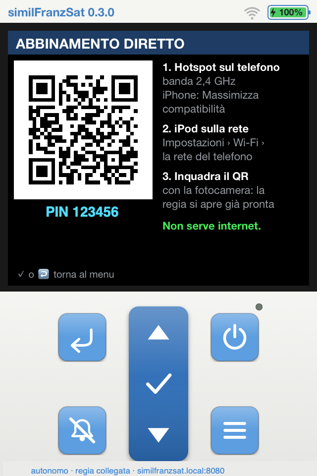<figcaption>Sull'iPod: inquadra e sei dentro.</figcaption></figure>
    <figure>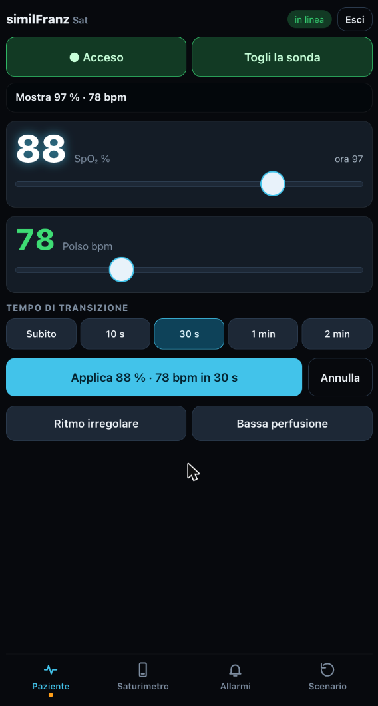<figcaption>Paziente: sposti, scegli il tempo, applichi.</figcaption></figure>
    <figure>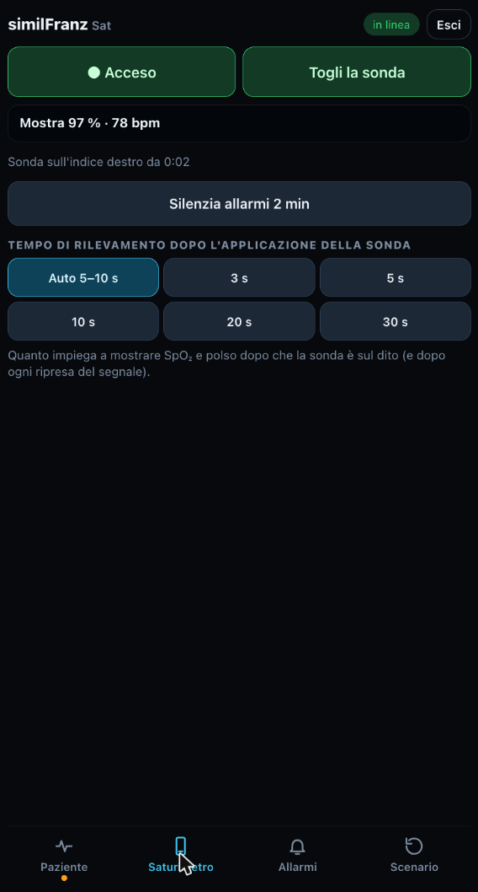<figcaption>Saturimetro: quanto ci mette a trovare il polso.</figcaption></figure>
    <figure>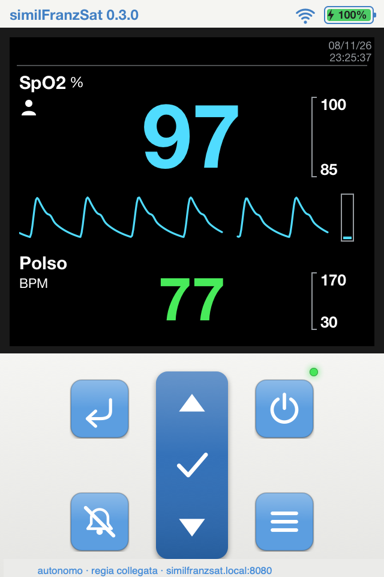<figcaption>E sull'iPod i valori arrivano come su uno strumento vero.</figcaption></figure>
  </div>
</section>

<section class="band tight">
  <div class="wrap">
    <span class="eyebrow">Dal cassetto alla sala</span>
    <h2>Lo stesso scenario, a una frazione del costo.</h2>
    <div class="ledger">
      <div class="col">
        <h3>Saturimetro simulato commerciale</h3>
        <div class="big">~1.300 €</div>
        <p class="note">Prezzo di listino indicativo di un saturimetro da simulazione comandato da app (2026).</p>
      </div>
      <div class="col ours">
        <h3>similFranz Saturimetro</h3>
        <div class="big">pochi €</div>
        <div class="rows">
          <div><span>iPod touch 4</span><b>quello nel cassetto</b></div>
          <div><span>Guscio in PLA</span><b>~58 g</b></div>
          <div><span>Sensore da dito</span><b>quello di un saturimetro dismesso</b></div>
          <div><span>4 inserti M2 + 4 viti M2×12</span><b>pochi centesimi</b></div>
          <div><span>Software e modelli 3D</span><b>gratis, open source</b></div>
        </div>
      </div>
    </div>
    <p class="lead">Un dispositivo fermo agli aggiornamenti del 2013 torna a lavorare per la formazione. Meno elettronica in discarica, più ore di simulazione per tutti.</p>
  </div>
</section>

<section class="band room">
  <div class="wrap split">
    <div>
      <span class="eyebrow">Riuso</span>
      <h2>Ce n'è uno in ogni cassetto. Letteralmente.</h2>
      <p class="lead">Tra il 2010 e il 2013 Apple ha venduto oltre 50 milioni di iPod touch, e per gran parte di quel periodo il modello in vendita era proprio la 4ª generazione.</p>
    </div>
    <div>
      <p class="m">Oggi molti di quelli sono fermi in un cassetto, spenti, in attesa di un motivo per riaccendersi. Se il tuo non c'è, lo trovi sui canali dell'usato a poche decine di euro: chi lo vende lo considera un ricordo, tu ci vedi uno strumento.</p>
      <p class="m"><strong>E la batteria?</strong> Dopo tanti anni non è più quella di una volta: Apple la progettava per conservare fino all'80% della capacità dopo 400 cicli di carica, e il litio invecchia anche fermo in un cassetto. Ma uno scenario di simulazione non dura una giornata: anche un'ora di autonomia è già tanto.</p>
      <p class="quote">Ogni iPod che torna in sala è un dispositivo in meno tra i rifiuti elettronici.</p>
      <p class="m">Nel 2022 il mondo ne ha prodotti 62 milioni di tonnellate, e solo il 22,3% è stato raccolto e riciclato in modo documentato.</p>
      <p class="note sources">Fonti: <a href="https://appleinsider.com/articles/13/05/30/apples-ipod-touch-reaches-100-million-sales-milestone">AppleInsider</a> (100 milioni di iPod touch, maggio 2013) · <a href="https://www.macrumors.com/2010/09/06/total-ipod-touch-sales-estimated-at-over-45-million/">MacRumors</a> (oltre 45 milioni a settembre 2010, stima Asymco) · <a href="https://en.wikipedia.org/wiki/IPod_Touch_(4th_generation)">Wikipedia</a> (date della 4ª generazione) · <a href="https://discussions.apple.com/thread/1879363">Apple Discussions</a> (batteria iPod: 80% a 400 cicli) · <a href="https://publikationen.bibliothek.kit.edu/1000133836/117458694">KIT, 2021</a> (invecchiamento del litio a riposo) · <a href="https://unitar.org/index.php/about/news-stories/press/global-e-waste-monitor-2024-electronic-waste-rising-five-times-faster-documented-e-waste-recycling">Global E-waste Monitor 2024</a></p>
    </div>
  </div>
</section>

<section class="band room">
  <div class="wrap">
    <span class="eyebrow">Oggi, e domani</span>
    <h2>Funziona da solo. E presto non sarà solo.</h2>
    <div class="modes">
      <div class="mode">
        <span class="tag">Da subito</span>
        <h3>iPod + il tuo telefono</h3>
        <p class="m">Il telefono fa da hotspot, l'iPod fa tutto il resto: simulazione, server e console. Inquadri il QR e sei pronto. Niente router, niente internet. Entri in reparto con lo strumento in tasca e lo scenario parte in un minuto.</p>
      </div>
      <div class="mode next">
        <span class="tag">Work in progress</span>
        <h3>Altri dispositivi, stessa filosofia</h3>
        <p class="m">Il saturimetro è il primo pezzo di qualcosa di più grande, fatto di altri vecchi dispositivi Apple che tornano utili alla simulazione. Segui il progetto su GitHub e sarai tra i primi a vederlo.</p>
      </div>
    </div>
  </div>
</section>

<section class="band" id="come">
  <div class="wrap">
    <span class="eyebrow">Come si costruisce</span>
    <h2>Quattro passi, un pomeriggio.</h2>
    <ol class="steps">
      <li><h3>Sblocca l'iPod</h3><p>Il jailbreak si fa con uno strumento gratuito e resta attivo anche dopo il riavvio. La guida ti accompagna passo per passo.</p></li>
      <li><h3>Installa l'app</h3><p>Dal Mac, con l'iPod collegato via USB: un comando e l'icona compare sull'iPod.</p></li>
      <li><h3>Stampa il guscio</h3><p>Due pezzi, un piatto solo, meno di due ore. Il progetto per la stampante è già pronto.</p></li>
      <li><h3>Simula</h3><p>Hotspot sul telefono, inquadri il QR sull'iPod e porta il tuo scenario in sala.</p></li>
    </ol>
    <div class="gallery">
      <figure>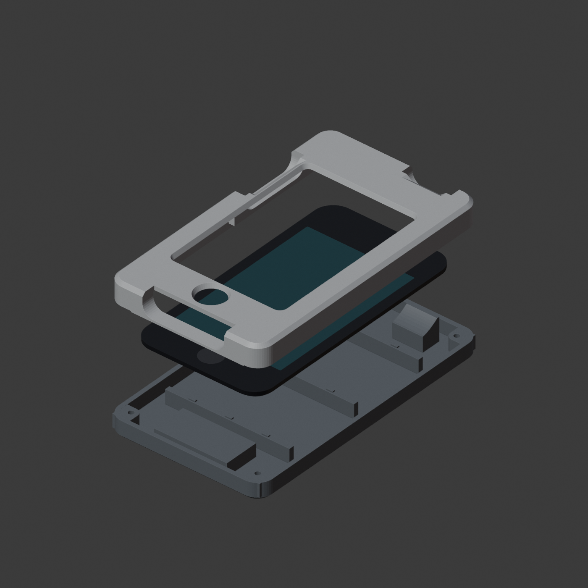<figcaption>Il progetto: cornice, iPod, scocca.</figcaption></figure>
      <figure>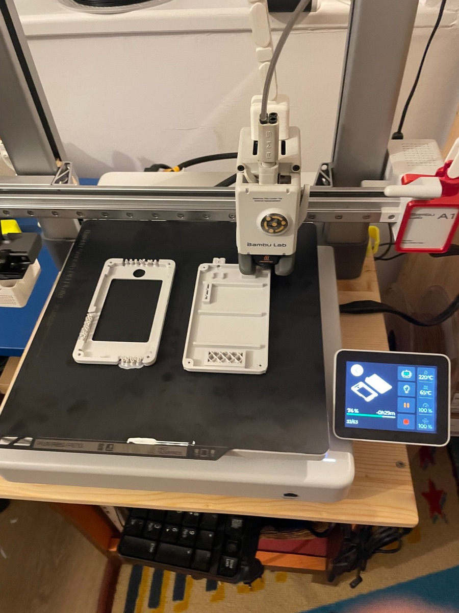<figcaption>Un piatto solo, meno di due ore.</figcaption></figure>
      <figure>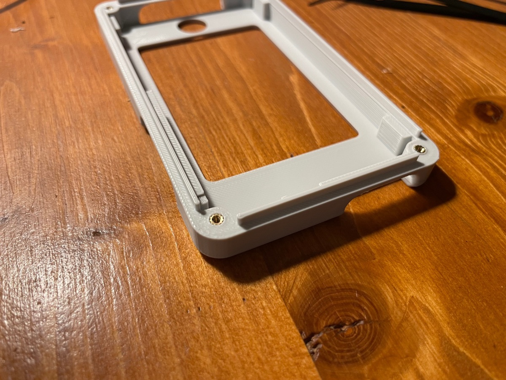<figcaption>Gli inserti filettati, posati col saldatore.</figcaption></figure>
      <figure>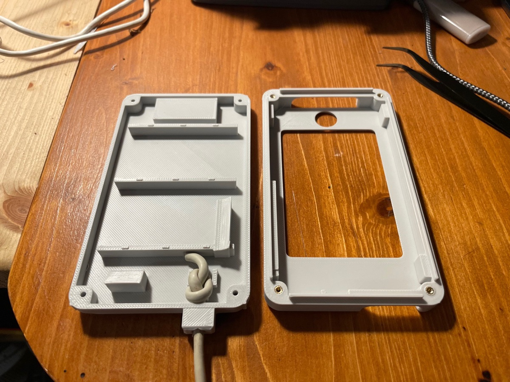<figcaption>La sonda entra dall'alto e si ferma con un nodo.</figcaption></figure>
    </div>
    <p class="note">Ti servono: un iPod touch di 4ª generazione, un Mac (o Linux) per l'installazione, una stampante 3D. Se usi Claude Code, può guidarti anche nell'installazione.</p>
  </div>
</section>

<section class="band tight">
  <div class="wrap shell">
    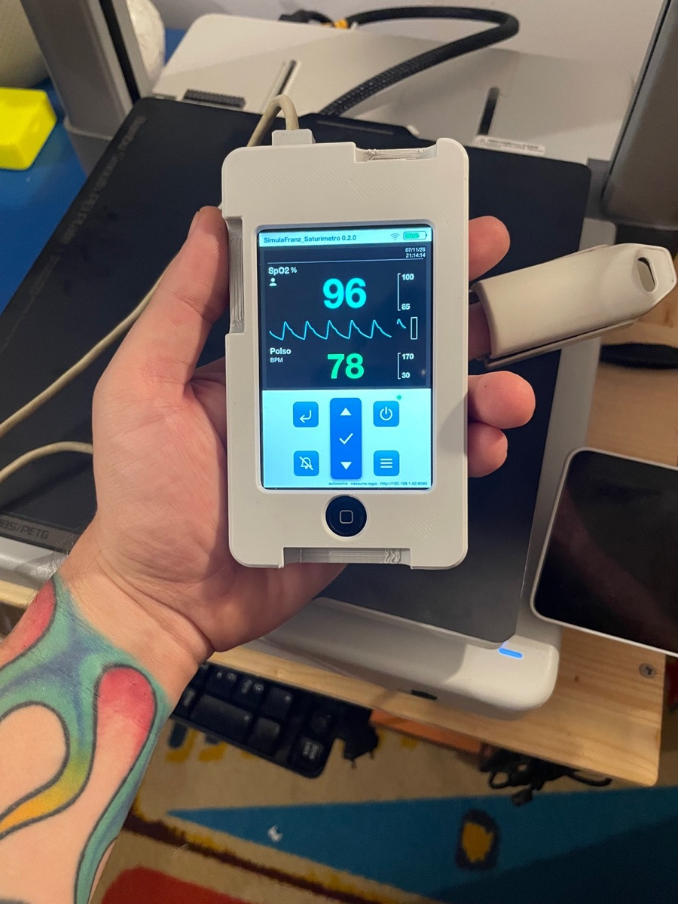
    <div>
      <span class="eyebrow">Il guscio</span>
      <h2>Lo prendi in mano e sembra uno strumento.</h2>
      <p>Cornice e scocca stampate in 3D trasformano l'iPod in un saturimetro palmare. I tasti dell'iPod restano raggiungibili e la presa per la ricarica resta libera.</p>
      <p><strong>Recupera anche la sonda.</strong> In alto c'è il bocchettone per il cavo di un vero sensore da dito, preso da un vecchio saturimetro dismesso: lo infili, lo fermi all'interno con una fascetta e il partecipante si trova in mano lo stesso cavo e la stessa pinza che userà in reparto. Il gesto di applicare il sensore diventa parte dello scenario.</p>
      <div class="specs">
        <span>71,4 × 123,5 × 18 mm</span>
        <span>PLA, ugello 0,4, piatto unico</span>
        <span>4 inserti filettati M2 · 4 viti M2×12</span>
        <span>Ingresso per cavo sonda fino a Ø 3,6 mm, con fermacavo interno</span>
      </div>
    </div>
  </div>
</section>

<section class="band room">
  <div class="wrap">
    <span class="eyebrow">Il bumper in TPU</span>
    <h2>Morbido sugli angoli, rigido quanto basta.</h2>
    <p class="lead">Un guscio in gomma stampata che protegge dalle cadute e dà presa. Si monta con la sonda già fissata: il bocchettone del cavo scende nel suo colletto e le alette gli scattano sopra.</p>
    <div class="bgallery">
      <figure class="wide">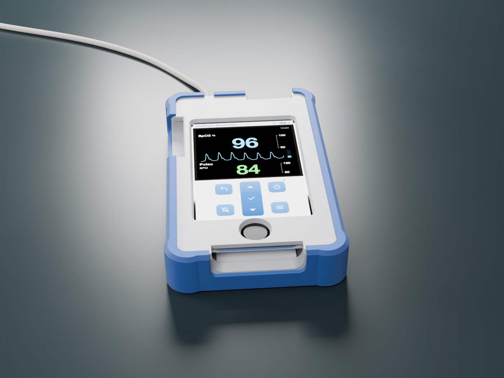</figure>
      <figure>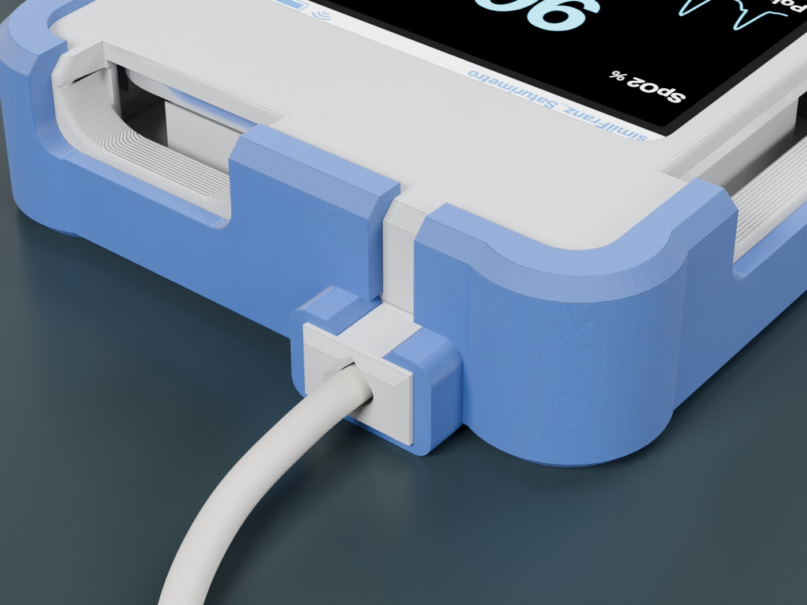<figcaption>Il colletto: il cavo resta fuori, il bocchettone scatta dentro.</figcaption></figure>
      <figure>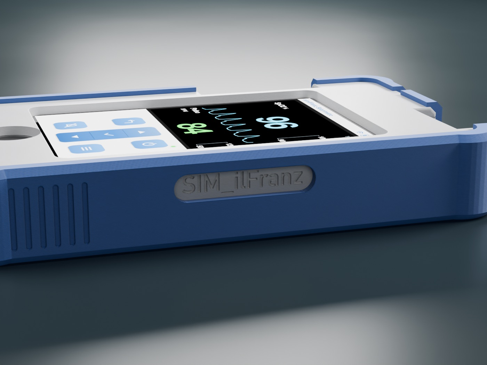<figcaption>Righine antiscivolo e finestrella sulla firma.</figcaption></figure>
    </div>
    <p class="note" style="color: var(--room-muted)">TPU 95A, circa 30 g, piatto testurizzato. Il progetto BambuStudio è già pronto nella repo.</p>
  </div>
</section>

<section class="band tight">
  <div class="wrap split">
    <div>
      <span class="eyebrow">Open source</span>
      <h2>Prendilo, cambialo, raccontami com'è andata.</h2>
    </div>
    <div>
      <p>Codice e modelli 3D sono open source. Se fai simulazione, insegni, o semplicemente non resisti davanti a un dispositivo da salvare dal cassetto, qui sei a casa. Costruiscilo, adattalo ai tuoi scenari e condividi cosa hai migliorato: ogni idea rende lo strumento migliore per tutta la comunità.</p>
      <ul class="list">
        <li>Formatori, istruttori e facilitatori di simulazione</li>
        <li>Centri di simulazione e reparti che fanno simulazione in situ</li>
        <li>Ingegneri clinici, tecnici, maker</li>
      </ul>
      <div class="ctas"><a class="btn primary" href="https://github.com/Franz8787/similfranz-saturimetro">Vai al progetto su GitHub</a></div>
    </div>
  </div>
</section>

<section class="band tight">
  <div class="wrap">
    <div class="warn">
      <strong>Solo per simulazione e formazione</strong>
      <p>Non è un dispositivo medico, non misura nulla e non va mai usato su pazienti. Il jailbreak si esegue sul proprio dispositivo, a proprio rischio. Il progetto non distribuisce file di Apple e non è affiliato ad Apple né a produttori di dispositivi medici o di simulazione.</p>
    </div>
  </div>
</section>

<footer>
  <div class="wrap">
    <span><b>similFranz Saturimetro</b> · un progetto open source di ilFranz (<a href="https://orcid.org/0009-0009-9368-0212">Francesco Palmisano</a>) per la comunità della simulazione sanitaria · <a href="https://doi.org/10.5281/zenodo.24064777">DOI 10.5281/zenodo.24064777</a></span>
    <span>Idea, scelte cliniche e didattiche, design e prove sul campo: ilFranz. Codice, guide e modelli 3D sviluppati con l'aiuto di <a href="https://www.anthropic.com/claude-code">Claude Code</a> (Anthropic), assistente di programmazione basato sull'IA, sotto la sua guida e verifica.</span>
    <span>Codice GPL v3 · Modelli 3D CC BY-NC 4.0 · iPod e iPod touch sono marchi di Apple Inc.</span>
  </div>
</footer>

<script>
(function () {
  var cv = document.getElementById("oxi");
  if (!cv || !cv.getContext) return;
  var ctx = cv.getContext("2d");
  var reduce = window.matchMedia && window.matchMedia("(prefers-reduced-motion: reduce)").matches;
  // si disegna lo schermo intero dell'iPod in coordinate 320 x 480 punti, come l'app
  function size() {
    var r = cv.getBoundingClientRect(), dpr = Math.min(window.devicePixelRatio || 1, 2), w = Math.max(1, r.width);
    cv.width = Math.round(w * dpr); cv.height = Math.round(Math.max(1, r.height) * dpr);
    ctx.setTransform(dpr * w / 320, 0, 0, dpr * w / 320, 0, 0);
  }
  var CYAN = "rgb(80,220,255)", GREEN = "rgb(72,235,90)", YELLOW = "rgb(255,214,0)", RED = "rgb(255,48,40)", GRAY = "#8a9aa2", KEY = "rgb(66,128,196)";
  var FONT = "'Helvetica Neue', Helvetica, Arial, sans-serif";
  // display dell'app: 304 x 257 a (8, 31); pletismografia 258 x 44 a (8, 128), barra d'ampiezza accanto
  var SX = 8, SY = 31, SW = 304, SH = 257;
  var X0 = 8, X1 = 266, PY = 128, PH = 44, SPEED = 55;
  var trace = new Array(SW + 1).fill(null);
  // limiti impostati dall'istruttore per lo scenario
  var LIM = { slo: 90, shi: 100, plo: 50, phi: 120 };
  // scenario di 66 s: stabile, desaturazione con tachicardia, O2T a 32 s, recupero
  var LOOP = 66, O2_AT = 32;
  var keys = [[0, 96, 84], [8, 96, 84], [26, 81, 128], [36, 81, 128], [52, 97, 88], [66, 96, 84]];
  function at(t) {
    for (var i = 0; i < keys.length - 1; i++) {
      var a = keys[i], b = keys[i + 1];
      if (t >= a[0] && t <= b[0]) { var k = (t - a[0]) / (b[0] - a[0]); return [a[1] + (b[1] - a[1]) * k, a[2] + (b[2] - a[2]) * k]; }
    }
    return [96, 84];
  }
  function phaseLabel(t) {
    if (t < 8) return ["Paziente stabile", ""];
    if (t < O2_AT) return ["Desaturazione in corso", "alarm"];
    if (t < 52) return ["Applicato O₂T", "o2"];
    return ["Paziente stabile", ""];
  }
  // stessa logica dell'app: sotto il limite = media priorità, oltre 5 punti sotto = alta; polso oltre +30 = alta
  function evaluate(s, p) {
    var sl = 0, pl = 0, msgs = [];
    if (s < LIM.slo) { sl = s < LIM.slo - 5 ? 2 : 1; msgs.push(["SpO2 BASSA < " + LIM.slo, sl]); }
    if (p > LIM.phi) { pl = p > LIM.phi + 30 ? 2 : 1; msgs.push(["POLSO ALTO > " + LIM.phi, pl]); }
    msgs.sort(function (a, b) { return b[1] - a[1]; });
    return { sl: sl, pl: pl, lvl: Math.max(sl, pl), msgs: msgs };
  }
  // onda pletismografica: salita rapida, apice arrotondato, discesa lenta con incisura dicrota
  function g(p, c, sl, sr) { var s = p < c ? sl : sr; return Math.exp(-Math.pow((p - c) / s, 2)); }
  function pleth(ph) {
    var sys = g(ph, 0.17, 0.065, 0.20), notch = -0.10 * g(ph, 0.39, 0.03, 0.03), dia = 0.16 * g(ph, 0.47, 0.06, 0.12);
    var tail = 0.05 * g(ph, 0.0, 0.08, 0.08) + 0.05 * g(ph, 1.0, 0.08, 0.08);
    return Math.max(0, sys + notch + dia + tail) / 1.02;
  }
  function T(txt, x, y, size, color, align, weight) {
    ctx.font = (weight || "700") + " " + size + "px " + FONT; ctx.fillStyle = color;
    ctx.textAlign = align || "left"; ctx.textBaseline = "top"; ctx.fillText(txt, x, y);
  }
  function rr(x, y, w, h, r) {
    ctx.beginPath(); ctx.moveTo(x + r, y); ctx.arcTo(x + w, y, x + w, y + h, r); ctx.arcTo(x + w, y + h, x, y + h, r);
    ctx.arcTo(x, y + h, x, y, r); ctx.arcTo(x, y, x + w, y, r); ctx.closePath();
  }
  function flashOn(lvl, t) { if (!lvl) return false; return Math.floor(t * (lvl === 2 ? 2 : 1) * 2) % 2 === 0; }   // alta 2 Hz, media 1 Hz
  function value(txt, x, y, w, h, lvl, color, t, maxPt) {
    var fg = color;
    if (lvl && flashOn(lvl, t)) { ctx.fillStyle = lvl === 2 ? RED : YELLOW; rr(x + 2, y + 6, w - 4, h - 12, 4); ctx.fill(); fg = lvl === 2 ? "#fff" : "#000"; }
    ctx.font = "700 " + Math.min(maxPt || 74, h * 0.98) + "px " + FONT; ctx.fillStyle = fg; ctx.textAlign = "center"; ctx.textBaseline = "middle";
    ctx.fillText(txt, x + w / 2, y + h / 2 + 3);
  }
  function limits(hi, lo, hiHit, loHit, lvl, x, y, h, t) {
    var y0 = y + 6, y1 = y + h - 6, fo = flashOn(lvl, t);
    ctx.strokeStyle = GRAY; ctx.lineWidth = 1; ctx.beginPath();
    ctx.moveTo(x + 6, y0); ctx.lineTo(x + 2, y0); ctx.lineTo(x + 2, y1); ctx.lineTo(x + 6, y1); ctx.stroke();
    T(String(hi), x + 9, y0 - 6, 13, hiHit ? (fo ? RED : YELLOW) : "#fff");
    T(String(lo), x + 9, y1 - 8, 13, loHit ? (fo ? RED : YELLOW) : "#fff");
  }
  // --- parti fisse: intestazione e tastiera dell'app ---
  function header() {
    ctx.fillStyle = "rgb(245,245,242)"; ctx.fillRect(0, 0, 320, 25);
    T("similFranzSat 0.3.1", 8, 6, 12, KEY);
    ctx.strokeStyle = KEY; ctx.lineWidth = 1.2; rr(276, 7, 30, 12, 2.5); ctx.stroke();      // batteria
    ctx.fillStyle = KEY; ctx.fillRect(306.5, 10.5, 2.5, 5); ctx.fillRect(278.5, 9.5, 20, 7);
    ctx.lineWidth = 1.6; ctx.lineCap = "round";                                               // Wi-Fi collegato
    for (var i = 0; i < 3; i++) { ctx.beginPath(); ctx.arc(260, 19, 3 + i * 3.6, -Math.PI * 0.75, -Math.PI * 0.25); ctx.stroke(); }
    ctx.lineCap = "butt";
    ctx.fillStyle = "rgb(26,26,26)"; ctx.fillRect(0, 23, 320, 273);                            // cornice scura del display
  }
  function icon(name, cx, cy, s, color) {
    ctx.strokeStyle = color; ctx.fillStyle = color; ctx.lineWidth = 2.4; ctx.lineCap = "round"; ctx.lineJoin = "round";
    ctx.beginPath();
    if (name === "up" || name === "down") {
      var d = name === "up" ? -1 : 1;
      ctx.moveTo(cx - s, cy - d * s * 0.5); ctx.lineTo(cx + s, cy - d * s * 0.5); ctx.lineTo(cx, cy + d * s * 0.6); ctx.closePath(); ctx.fill();
    } else if (name === "ok") {
      ctx.moveTo(cx - s * 0.8, cy); ctx.lineTo(cx - s * 0.2, cy + s * 0.6); ctx.lineTo(cx + s * 0.9, cy - s * 0.6); ctx.stroke();
    } else if (name === "power") {
      ctx.arc(cx, cy + 1, s * 0.75, -Math.PI * 0.32, Math.PI * 1.32); ctx.stroke();
      ctx.beginPath(); ctx.moveTo(cx, cy - s * 0.9); ctx.lineTo(cx, cy); ctx.stroke();
    } else if (name === "back") {
      ctx.moveTo(cx + s * 0.8, cy + s * 0.7); ctx.lineTo(cx + s * 0.8, cy - s * 0.05); ctx.quadraticCurveTo(cx + s * 0.8, cy - s * 0.45, cx + s * 0.3, cy - s * 0.45);
      ctx.lineTo(cx - s * 0.7, cy - s * 0.45); ctx.stroke();
      ctx.beginPath(); ctx.moveTo(cx - s * 0.35, cy - s * 0.85); ctx.lineTo(cx - s * 0.75, cy - s * 0.45); ctx.lineTo(cx - s * 0.35, cy - s * 0.05); ctx.stroke();
    } else if (name === "menu") {
      for (var i = -1; i <= 1; i++) { ctx.moveTo(cx - s * 0.75, cy + i * s * 0.5); ctx.lineTo(cx + s * 0.75, cy + i * s * 0.5); }
      ctx.stroke();
    } else if (name === "mute") {
      ctx.moveTo(cx - s * 0.6, cy + s * 0.45); ctx.quadraticCurveTo(cx - s * 0.5, cy - s * 0.85, cx, cy - s * 0.85);
      ctx.quadraticCurveTo(cx + s * 0.5, cy - s * 0.85, cx + s * 0.6, cy + s * 0.45); ctx.closePath(); ctx.stroke();
      ctx.beginPath(); ctx.moveTo(cx - s * 0.9, cy - s * 0.9); ctx.lineTo(cx + s * 0.9, cy + s * 0.9); ctx.stroke();
    }
    ctx.lineCap = "butt"; ctx.lineJoin = "miter";
  }
  function keypad() {
    var y0 = 294;
    ctx.fillStyle = "#fff"; ctx.fillRect(0, y0, 320, 186);
    var pw = 60, ph = 156, px = 130, py = y0 + 15, seg = ph / 3;
    ctx.save(); ctx.shadowColor = "rgba(0,0,0,0.38)"; ctx.shadowBlur = 4; ctx.shadowOffsetY = 2;
    ctx.fillStyle = "rgb(44,108,182)"; rr(px, py, pw, ph, 10); ctx.fill(); ctx.restore();
    var gr = ctx.createLinearGradient(0, py, 0, py + ph);
    gr.addColorStop(0, "rgba(255,255,255,0.28)"); gr.addColorStop(0.45, "rgba(255,255,255,0.04)"); gr.addColorStop(1, "rgba(0,0,0,0.14)");
    ctx.fillStyle = gr; rr(px, py, pw, ph, 10); ctx.fill();
    ctx.strokeStyle = "rgba(0,0,0,0.18)"; ctx.lineWidth = 1;
    ctx.beginPath(); ctx.moveTo(px + 6, py + seg); ctx.lineTo(px + pw - 6, py + seg); ctx.moveTo(px + 6, py + 2 * seg); ctx.lineTo(px + pw - 6, py + 2 * seg); ctx.stroke();
    icon("up", px + pw / 2, py + seg / 2, 9, "#fff"); icon("ok", px + pw / 2, py + seg * 1.5, 9, "#fff"); icon("down", px + pw / 2, py + seg * 2.5, 9, "#fff");
    var ks = 50, lx = px - 22 - ks, rx = px + pw + 22, ty = py + 6, by = py + ph - ks - 6;
    [["back", lx, ty], ["power", rx, ty], ["mute", lx, by], ["menu", rx, by]].forEach(function (k) {
      ctx.save(); ctx.shadowColor = "rgba(0,0,0,0.3)"; ctx.shadowBlur = 3; ctx.shadowOffsetY = 2;
      var kg = ctx.createLinearGradient(0, k[2], 0, k[2] + ks); kg.addColorStop(0, "rgb(92,158,224)"); kg.addColorStop(1, "rgb(66,128,196)");
      ctx.fillStyle = kg; rr(k[1], k[2], ks, ks, 12); ctx.fill(); ctx.restore();
      icon(k[0], k[1] + ks / 2, k[2] + ks / 2, 11, "#fff");
    });
    ctx.save(); ctx.fillStyle = "rgb(70,230,90)"; ctx.shadowColor = "rgb(70,230,90)"; ctx.shadowBlur = 6;     // LED di accensione
    ctx.beginPath(); ctx.arc(rx + ks - 0.5, ty - 5.5, 3.5, 0, Math.PI * 2); ctx.fill(); ctx.restore();
  }
  // --- audio come nell'app: tono del polso legato alla SpO2, allarme alto 3+2 bip a 960 Hz ogni 6 s, medio 3 bip a 660 Hz ogni 8 s ---
  var ac = null, audioOn = false, curLvl = -1, aStart = 0, aPrev = -0.001;
  var HIGH = { f: 960, d: 0.12, period: 6, b: [0, 0.2, 0.4, 0.85, 1.05] }, MED = { f: 660, d: 0.2, period: 8, b: [0, 0.32, 0.64] };
  function beepHz(s) { s = Math.max(50, Math.min(100, s)); return 880 * Math.pow(2, (s - 100) / 30); }
  function tone(f, d, gain, harm) {
    if (!ac) return;
    var t = ac.currentTime + 0.01, gn = ac.createGain();
    gn.gain.setValueAtTime(0, t); gn.gain.linearRampToValueAtTime(gain, t + 0.008);
    gn.gain.setValueAtTime(gain, t + Math.max(0.01, d - 0.02)); gn.gain.linearRampToValueAtTime(0, t + d);
    gn.connect(ac.destination);
    var parts = harm ? [[1, 1 / 1.5], [3, 0.35 / 1.5], [5, 0.15 / 1.5]] : [[1, 1]];
    for (var i = 0; i < parts.length; i++) {
      var o = ac.createOscillator(), gg = ac.createGain();
      o.frequency.value = f * parts[i][0]; gg.gain.value = parts[i][1];
      o.connect(gg); gg.connect(gn); o.start(t); o.stop(t + d + 0.05);
    }
  }
  function alarmAudio(lvl, t) {
    if (lvl !== curLvl) { curLvl = lvl; aStart = t; aPrev = -0.001; }
    if (!lvl) return;
    var P = lvl === 2 ? HIGH : MED, tp = (t - aStart) % P.period;
    for (var i = 0; i < P.b.length; i++) {
      var st = P.b[i], hit = aPrev <= tp ? (st > aPrev && st <= tp) : (st > aPrev || st <= tp);
      if (hit) tone(P.f, P.d, 0.42, true);
    }
    aPrev = tp;
  }
  var btn = document.getElementById("audio");
  if (btn) btn.addEventListener("click", function () {
    try {
      if (!ac) { var A = window.AudioContext || window.webkitAudioContext; if (!A) return; ac = new A(); }
      if (ac.state === "suspended") ac.resume();
    } catch (e) { return; }
    audioOn = !audioOn; curLvl = -1;
    btn.textContent = audioOn ? "Audio attivo" : "Attiva audio";
    btn.setAttribute("aria-pressed", audioOn ? "true" : "false");
  });
  var lab = document.getElementById("scen"), labNow = "";
  function updateLabel(t) {
    var p = phaseLabel(t);
    if (lab && p[0] !== labNow) { labNow = p[0]; lab.textContent = p[0]; lab.className = "scen" + (p[1] ? " " + p[1] : ""); }
  }
  var beatAmp = 1, beatLen = 1, shown = null, nextShow = 0, level = 0;
  var x = X0, phase = 0, last = null, t0 = null;
  function draw(now) {
    if (t0 === null) t0 = now;
    var tAbs = reduce ? 30 : (now - t0) / 1000, t = tAbs % LOOP;
    var dt = last === null ? 0 : Math.min(0.05, (now - last) / 1000); last = now;
    var v = at(t);
    // come uno strumento vero: i numeri mostrati sono medie aggiornate ogni ~2 s
    if (shown === null || tAbs >= nextShow) { shown = [Math.round(v[0]), Math.round(v[1])]; nextShow = tAbs + 2; }
    var ev = evaluate(shown[0], shown[1]);
    updateLabel(t);
    header(); keypad();
    ctx.save(); ctx.translate(SX, SY);
    ctx.fillStyle = "#000"; rr(0, 0, SW, SH, 3); ctx.fill(); ctx.clip();
    // barra di stato: messaggi d'allarme a rotazione ogni 3 s, colore della priorità
    if (ev.msgs.length) { var m = ev.msgs[Math.floor(tAbs / 3) % ev.msgs.length]; T(m[0], 8, 5, 11, m[1] === 2 ? RED : YELLOW); }
    T("10:24", SW - 8, 5, 11, GRAY, "right", "500");
    // SpO2
    T("SpO2", 8, 28, 15, "#fff"); T("%", 50, 30, 12, "#fff", "left", "400");
    value(String(shown[0]), 56, 40, SW - 112, 86, ev.sl, CYAN, tAbs);
    limits(LIM.shi, LIM.slo, false, ev.sl > 0, ev.sl, SW - 54, 44, 78, tAbs);
    // pletismografia a scorrimento con la barra d'ampiezza accanto all'onda
    var amp = 0.55 + 0.45 * Math.max(0, Math.min(1, (v[0] - 80) / 16));
    var n = reduce ? (X1 - X0) : Math.max(1, Math.round(dt * SPEED));
    for (var s = 0; s < n; s++) {
      phase += (v[1] / 60) / SPEED / beatLen;
      if (phase >= 1) {                              // nuovo battito: piccola variabilità, bip del polso
        phase -= 1; beatAmp = 0.94 + Math.random() * 0.12; beatLen = 0.97 + Math.random() * 0.06;
        if (audioOn && !reduce) tone(beepHz(shown[0]), 0.07, 0.10, false);
      }
      var resp = Math.sin(2 * Math.PI * (tAbs + s / SPEED) / 4.2);   // respiro ~14/min
      level = pleth(phase) * amp * beatAmp;
      trace[Math.round(x)] = PY + PH * 0.95 - (level * (1 + 0.05 * resp) * 0.86 + 0.04 * resp) * PH;
      x += 1; if (x > X1) x = X0;
      for (var k = 1; k < 7; k++) { var xi = x + k; if (xi > X1) xi = X0 + (xi - X1 - 1); trace[Math.round(xi)] = null; }
    }
    ctx.strokeStyle = CYAN; ctx.lineWidth = 1.8; ctx.lineJoin = "round"; ctx.beginPath();
    var pen = false;
    for (var i = X0; i <= X1; i++) {
      var y = trace[i];
      if (y == null) { pen = false; continue; }
      if (!pen) { ctx.moveTo(i, y); pen = true; } else ctx.lineTo(i, y);
    }
    ctx.stroke();
    var lit = Math.round(level * 8), bx = X1 + 10;
    for (var b = 0; b < 8; b++) { ctx.fillStyle = b < lit ? CYAN : "#12232a"; ctx.fillRect(bx, PY + PH - 2 - (b + 1) * 5, 11, 3.5); }
    // polso
    var yPr = PY + PH + 4, hPr = SH - yPr - 4;
    T("Polso", 8, yPr + 2, 15, "#fff"); T("BPM", 8, yPr + 22, 11, "#fff", "left", "400");
    value(String(shown[1]), 56, yPr + 10, SW - 112, hPr - 12, ev.pl, GREEN, tAbs, 50);   // polso più piccolo della SpO2, come nell'app
    limits(LIM.phi, LIM.plo, ev.pl > 0, false, ev.pl, SW - 54, yPr + 14, hPr - 18, tAbs);
    ctx.restore();
    if (audioOn && !reduce) alarmAudio(ev.lvl, tAbs);
    if (!reduce) requestAnimationFrame(draw);
  }
  size();
  window.addEventListener("resize", function () { size(); if (reduce) requestAnimationFrame(draw); });
  if (document.fonts && document.fonts.ready) document.fonts.ready.then(function () { requestAnimationFrame(draw); });
  else requestAnimationFrame(draw);
})();
</script>
